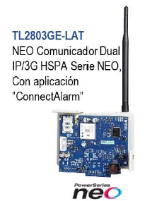
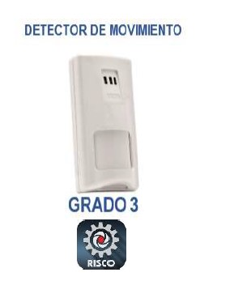
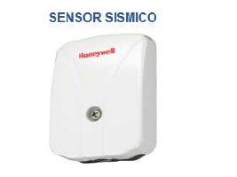
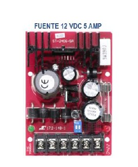

Esta avanzada sinergia de tecnologías se ofrece en un pequeño,
compacto y discreto panel que ofrece métodos de configuración
múltiple, completo control e instalación a través de la
aplicación del dispositivo inteligente Hik-Connect e iVMS, así
como verificación de video mediante la revolucionaria
Verificación de Intrusos como Servicio (Intruder Verification as
a Service, IVaaS). Si bien otros métodos de verificación de
video en el mercado dependen de enviar imágenes estáticas de
baja calidad para confirmar eventos, IVaaS vincula sistemas de
intrusión y de video anteriormente separados en una plataforma,
mostrando al operador un clip de siete segundos en caso de una
alarma; un clip de cinco segundos previo a la alarma y un clip
de dos segundos posterior a la alarma. El sistema incluye las
series AX y AX PRO. La nueva serie AX PRO admite hasta 210
periféricos, desde una amplia gama que incluye detectores
internos y externos, contactos, llaves a distancia y sensores de
seguridad vitales. La amplia gama de dispositivos inalámbricos
de intrusión incluye tecnologías de intrusión galardonadas,
probadas y patentadas, para ofrecer una completa confianza y
tranquilidad, con una instalación sencilla usando indicadores de
intensidad de señal y una función de conexión simple con un solo
toque.
TL2803GE-LAT
$184,75

Comunicador de alarma de doble trayecto vía Internet y celular
totalmente redundante Enrutamiento de llamadas integrado Soporte
de carga/descarga remota del panel por celular e Internet Señal
de supervisión por celular e Internet Encriptación AES 128 bits
por celular e Internet Reporte de eventos completo Protocolos
SIA y Contact ID Verificación visual por celular o Internet
Comando y control por SMS.
RK815DTG3
$52,00

Tipo: DT de interior
PD6662, EN50131-2-4: Grado 3
Microondas: Banda-X
Sensor PIR: Elemento Dual
Tecnología Anti-Cloak
Línea verde
Procesamiento Inteligente de la Señal Digital
Detector digital y compensación verdadera de la temperatura
Resistencia RFL incorporada
Método anti-enmascaramiento: IR Activo
Alcances: 15m y 25m (50 , 82 ) gran angular
Lentes opcionales: Lente de Pasillo, 15m (50 ) 23m (75 )
Lente de Cortina, 12m (40 )
Altura de montaje: De 2,10m a 2,70m (7-9 )
Accesorios Opcionales: Rótula de pared con tamper posterior,
rótula pared / rincón, rótula de techoContacto de Alarma:
Normal cerrado.
ADE-SC100
$70.99

El modelo SC100 detecta vibraciones que surgen de intentos
de perturbar estructuras sólidas, incluidos cajeros
automáticos fijos, bóvedas de bancos, cajas fuertes y puertas.
El SC100 se puede instalar en sistemas de seguridad nuevos o
existentes y ofrece un mayor nivel de protección e inmunidad
a falsas alarmas que los sensores de choque tradicionales,
que a menudo carecen de la capacidad de discriminar entre la
vibración ambiental y los ataques reales.
ST2406-5AQ
$49.99

Interruptor selectivo salida voltaje CC
Voltaje de salida regulado y filtrado
Protección de corto circuito con batería integrada
Protección térmica y compensación
Recarga automática de baterías de respaldo integrada
Interruptor de cambio automático para la batería de respaldo
si se pierde o corta la fuente principal
Protegida con un fusible para la carga de la batería regulada
2 LED's para indicar entrada de poder CA y salida de poder CC
Compatible con baterías recargables gel-type o que lleven
acido
Polaridad reversible protegida
Puede operar a baja temperatura
Incluye una cinta de espuma y cables de batería para una
sencilla instalación.